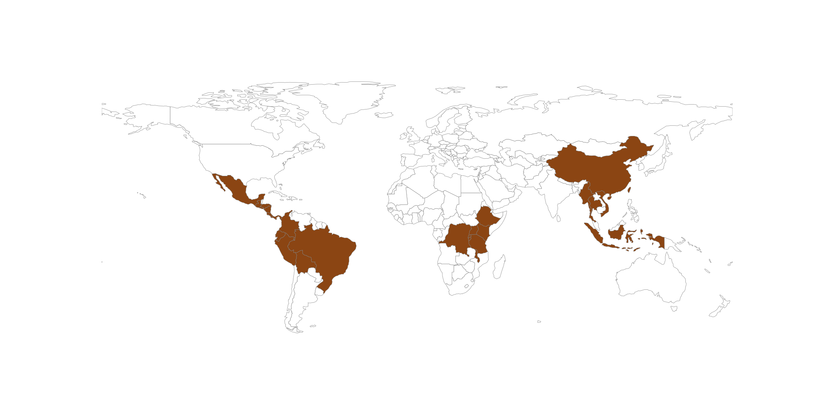

About Me
Yuan-Chih Hsieh
Ph.D. Student in Applied Mathematics, Statistics & Scientific Computation
Academic Journey
I'm currently a Ph.D. student in the Applied Mathematics, Statistics & Scientific Computation (AMSC) program at the University of Maryland, College Park. My passion lies at the intersection of computer science, meteorology, and mathematics—fields that might seem distinct, but their synergy drives my research and academic curiosity.
My journey into interdisciplinary research began at Pennsylvania State University, where I earned double B.S. degrees in Meteorology and Atmospheric Science, and Computer Science in May 2023. During my undergraduate years, I had the privilege of working with Professor Xingchao Chen on a project focused on Mesoscale Convective Systems (MCS). This research demonstrated my commitment to bridging diverse disciplines to solve real-world problems and fueled my desire to continue working in areas that push the boundaries of computational science and meteorology. Now, as I dive into the world of mathematics, you could say I'm really trying to tackle the "root" of the problem!
Current Research
Under the mentorship of Professor Kayo Ide, my current research dives deep into data assimilation—an area where observational data is integrated into numerical models to improve prediction accuracy.
With a strong foundation in both meteorology and computer science, I am motivated to tackle the complex challenges involved in modeling and prediction. I am especially excited about the potential of data assimilation to revolutionize the way we predict large-scale systems, such as weather patterns. In addition to my core research, I am exploring how emerging technologies, such as machine learning and high-performance computing, can complement traditional methods to improve weather models, making them more efficient, accurate, and adaptable to new data.
Beyond Academia
In addition to my research, I have a deep passion for coffee brewing. I find joy in the process of making a great cup of coffee, as there are so many variables involved, and any change can significantly impact the final cup. This is where my nerdy side comes into play; I love analyzing and experimenting with different brewing techniques, grind sizes, and extraction times to achieve the perfect cup. For me, crafting coffee is not just a routine, but a way to balance my focus and creativity. You'll often find me brewing a fresh cup, which keeps me energized and inspired throughout my research sessions.
Coffee Regions I've Explored
Highlighted regions represent the coffee origins I've had the pleasure of tasting so far in my coffee journey.
Coffee Regions I've Explored
Highlighted regions represent the coffee origins I've had the pleasure of tasting so far in my coffee journey.